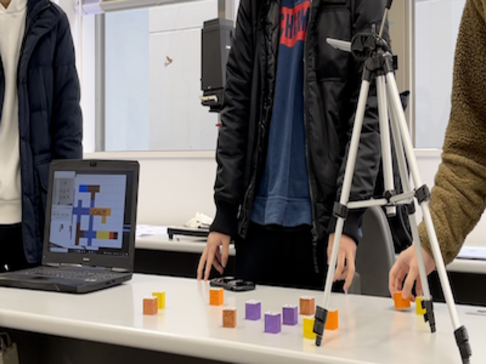
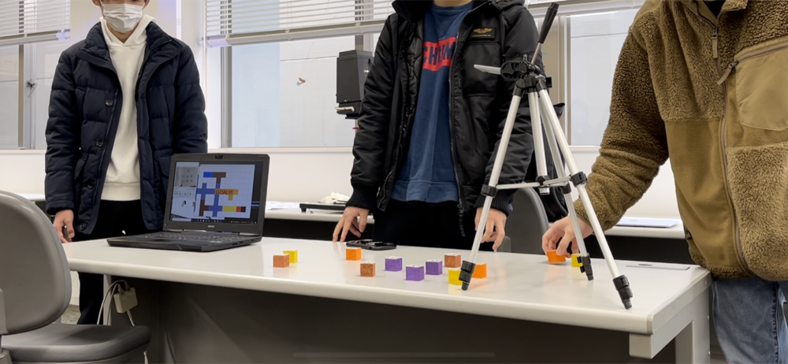

Maze Generator

Technology
- ReacTIVision
- Processing
- Android Camera
2年生後期の授業で行った内容。ブロックを置くことでディスプレイ上に道ができ、迷路を作ることができる。プレイヤーはPCの十字キーを使うことで迷路を探索することができる。
カメラによりブロック上部に貼り付けてあるマーカーを読み取ることでブロックの座標を読み取り、それを元にプログラムで処理しディスプレイに表示している。


Technology
2年生後期の授業で行った内容。ブロックを置くことでディスプレイ上に道ができ、迷路を作ることができる。プレイヤーはPCの十字キーを使うことで迷路を探索することができる。
カメラによりブロック上部に貼り付けてあるマーカーを読み取ることでブロックの座標を読み取り、それを元にプログラムで処理しディスプレイに表示している。
